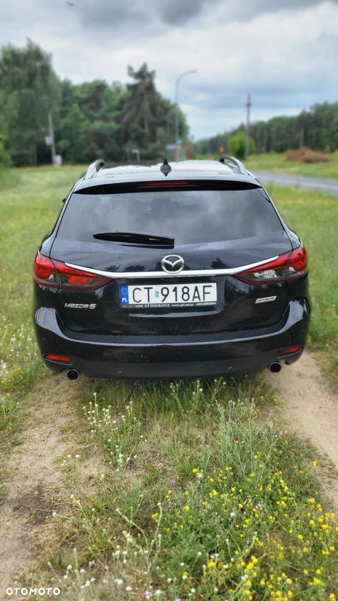

Mazda 6 combi | 2015 | Automat | Maksymalna wersja wyposażenia | Bezwypadkowa | Zadbana | Garażowana
Na sprzedaż oferuję Mazdę z 2015 roku z niezawodnym silnikiem benzynowym oraz automatyczną skrzynią biegów. Auto w maksymalnej wersji wyposażenia, idealne dla osób ceniących komfort, bezpieczeństwo i estetykę. Do kwietnia 2022 roku serwisowana w ASO.
Stan techniczny:
• Bezwypadkowa, zadbana, garażowana
• Właściciel niepalący, w aucie nie jeździły małe dzieci ani zwierzęta
• Od kwietnia 2024 roku w moim posiadaniu
• Grudzień 2024: wymiana oleju, filtrów, serwis klimatyzacji
• Luty 2025: wymiana wahaczy przednich
• Przebieg: 228 000
• Spalanie miasto 11,5 l/100 km, spalanie trasa 7,5 l/100 km
Wyposażenie:
• Skórzane fotele, wszystkie podgrzewane
• Klimatyzacja automatyczna
• Czujniki parkowania
• Tempomat
• Pełen pakiet systemów bezpieczeństwa:
- ostrzeganie o możliwej kolizji
- asystent pasa ruchu
- sygnalizacja ruchu poprzecznego przy cofaniu
• Szyberdach
• 2 komplety kół:
- letnie – na jeszcze 1 sezon
- zimowe – na 3 sezony
Auto więcej stało niż jeździło, jest w bardzo dobrym stanie – gotowe do jazdy bez wkładu finansowego. Jak na auto 10 letnie jest w świetnym stanie, ma drobne niedoskonałości takie jak odpryski od kamyczków na przodzie. Na zimowych felgach łuszczy się lakier. Do wymiany w najbliższym czasie co najwyżej przednie klocki hamulcowe.
